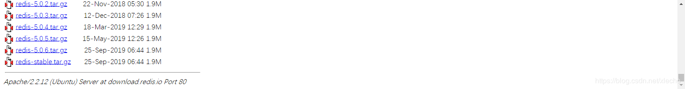
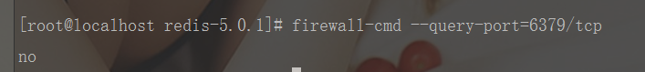

echo编辑整理，欢迎转载，转载请声明文章来源。欢迎添加echo微信(微信号：t2421499075)交流学习。 百战不败，依不自称常胜，百败不颓，依能奋力前行。——这才是真正的堪称强大！！！
1、Redis运行环境安装（安装gcc依赖）
yum install gcc-c++2、创建一个文件夹用于安装redis
mkdir /usr/local/redis3、下载Redis安装包
http://download.redis.io/releases/

# 移动到指定目录
mv redis-5.0.6.tar.gz /usr/local/redis/4、解压安装包
tar -zxvf redis-5.0.6.tar.gz5、编译安装
d redis-5.0.6make MALLOC=libc
cd src
make install6、修改配置文件
cd redis-5.0.6
vi redis.conf
# 除本机外其他机器也可访问
bind 127.0.0.1
# 安全机制调整
protected-mode no
# 支持后台运行
daemonize yes7、开放Redis默认端口
iptables -A INPUT -p tcp --dport 6379 -j ACCEPT 8、启动Redis
redis-server redis.conf9、查看Redis是否启动
ps -ef | grep redis10、杀掉进程
kill -9 id11、配置密码
requirepass 12345612、连接Redis
./redis-cli -p 6379 -a 123456
redis-cli -h 192.168.222.135 -p 6379
auth 密码13、查看密码是否设置成功
config get requirepass14、cmd测试远程redis是否能够连接上
telnet 192.168.222.135 637915、查看端口是否开放
lsof -i:6379
或者
firewall-cmd --query-port=6379/tcp
返回no就是未开放
16、查看目前开放的端口
netstat -atu17、CentOS7下开放端口号
添加指定需要开放的端口：
firewall-cmd --add-port=123/tcp --permanent
重载入添加的端口：
firewall-cmd --reload
查询指定端口是否开启成功：
firewall-cmd --query-port=123/tcp做一个有底线的博客主